修学旅行「富士山が見える！関東の旅４日間」
「富士山が見える！関東の旅４日間」（２月１５日～１８日）は、生徒７２名と引率教員４名が参加しました。
１日目は、高松駅に集合し、新幹線で三島駅に到着後、箱根へ移動しました。
箱根では芦ノ湖の海賊船に乗船。快晴のもと、心地よい風を感じながら、遠くに富士山を望むことができました。
その後、箱根ロープウェイの早雲山駅へ向かいましたが混雑していたため、先に彫刻の森美術館を見学し、約１時間にわたり野外彫刻などを鑑賞しました。
再び早雲山駅を訪れると、ようやくロープウェイに乗車することができ、大涌谷まで遊覧しました。
ロープウェイから見下ろした大涌谷では、立ち上る硫黄の煙や茶色い山肌が広がり、生徒たちからは驚きの声が上がっていました。
１日の締めくくりは熱海の温泉で疲れを癒し、翌日に備えて英気を養いました。
２日目も快晴の中、富士山へ向かいました。
車内からもその美しい姿をはっきりと見ることができました。
富士山４合目に到着すると、雲海の先に日本アルプスの絶景が広がっており、生徒たちは雪の残る４合目で楽しそうに過ごしていました。
河口湖で昼食をとった後は横浜へ移動し、赤レンガ倉庫の散策や、中華街での食べ歩き（小籠包など）を楽しみました。
３日目はディズニーリゾートにて、ランドとシーに分かれて終日活動しました。
生徒たちはキャラクターアクセサリーを身に着け、アトラクションやパレードを満喫し、夢の国でのひとときを楽しんでいました。
４日目の最終日は、東京都内各所を見学しました。
浅草では雷門で集合写真を撮影後、浅草寺や仲見世商店街を散策。東京スカイツリーでは展望デッキに上り、都内の景色を一望しました。
お台場での昼食後、最後の見学地である上野では自由行動となり、国立博物館や動物園、アメ横を訪れる生徒や、JR上野駅から秋葉原や新宿へ足を延ばす生徒もおり、それぞれが思い思いに東京を満喫していました。
今回の旅行では、新幹線やバス、遊覧船、ロープウェイ、電車、飛行機といった多様な乗り物を利用する貴重な体験もできました。
心に残る充実した４日間となり、友人との絆も一層深まったことと思います。
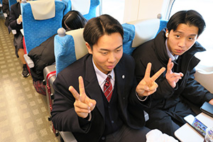
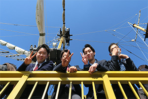
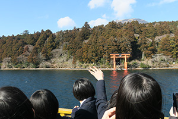
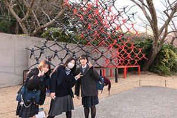
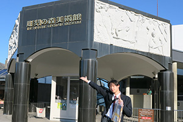
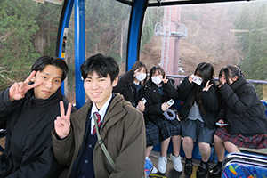
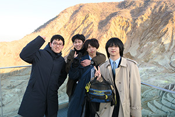
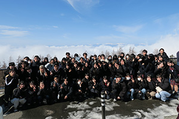
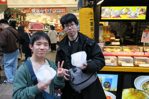
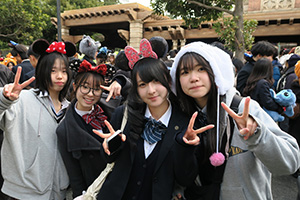
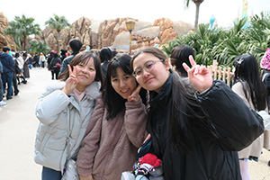
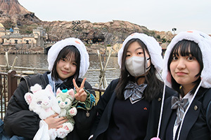
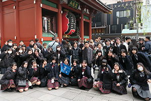
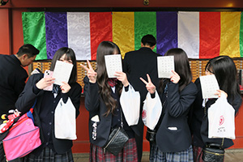
| ＜＜前のニュース | 次のニュース＞＞ |